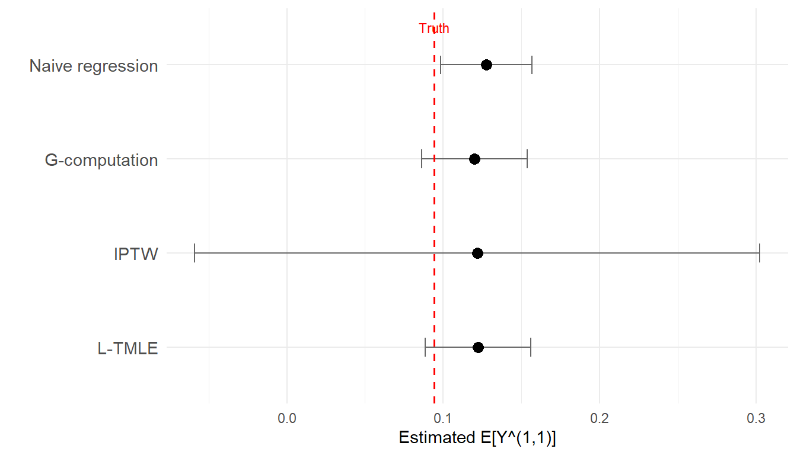

Full step-by-step implementation for two time points
Estimated reading time: 30 minutes
Optional / advanced chapter
This chapter works through the full by-hand L-TMLE implementation for readers who want to see exactly how the algorithm runs at the code level. It uses the same two-time-point HIV simulation as the preceding conceptual chapter. Most applied readers can skip it and go straight to the LMTP chapters, which give the recommended workflow for realistic longitudinal interventions. Come back here when you need to see the internals.
15 Setup: simulated data
We use the same two-time-point HIV cohort (Wal and Geskus 2011) as the conceptual L-TMLE chapter. The data encodes treatment-confounder feedback. ART adherence at visit 1 (\(A_1\)) raises CD4 (\(L_1\)), which in turn affects visit-2 adherence (\(A_2\)) and virologic failure (\(Y\)).
Show code
set.seed(2026)# n = 1000 keeps the by-hand walkthrough fast in both the static and# the WebR (interactive) builds. The conceptual companion chapter and# this chapter share the same data-generating process and seed.n <-1000W_age <-rnorm(n, mean =40, sd =10)W_male <-rbinom(n, 1, 0.6)W_cd4_bl <-pmax(50, rnorm(n, mean =350, sd =120))W_vl_bl <-rnorm(n, mean =4.2, sd =0.7)W <-0.01* (W_age -40) -0.001* (W_cd4_bl -350) +0.2* W_vl_bl -0.1* W_maleg1_true <-plogis(0.3+0.5* W)A1 <-rbinom(n, 1, g1_true)L1 <-rnorm(n, mean =0.3* W +1.2* A1, sd =1) # strong treatment -> confounderg2_true <-plogis(-0.5+0.8* L1 +0.3* A1) # strong confounder -> treatmentA2 <-rbinom(n, 1, g2_true)Y <-rbinom(n, 1, plogis(-0.8-0.4* A1 -0.5* A2 -0.6* L1 +0.2* W)) # strong L1 effectdat <-tibble(W, A1, L1, A2, Y)
Show code
# Oracle truth (separate seed, large MC sample)set.seed(9999)n_mc <-100000W_mc <-rep(W, length.out = n_mc)L1_cf11 <-rnorm(n_mc, mean =0.3* W_mc +1.2, sd =1)Y_cf11 <-plogis(-0.8-0.4-0.5-0.6* L1_cf11 +0.2* W_mc)true_EY_11 <-mean(Y_cf11)cat("True E[Y^(1,1)]:", round(true_EY_11, 4), "\n")#> True E[Y^(1,1)]: 0.0941
16 Phase A: Estimate the treatment mechanisms
At each time point, estimate the probability of receiving treatment conditional on the observed history.
Show code
# Time 1: P(A1 = 1 | W)g1_mod <-glm(A1 ~ W, family = binomial, data = dat)1g1_hat <-pmax(0.01, pmin(0.99, predict(g1_mod, type ="response")))# Time 2: P(A2 = 1 | A1, L1, W)g2_mod <-glm(A2 ~ L1 + A1 + W, family = binomial, data = dat)g2_hat <-pmax(0.01, pmin(0.99, predict(g2_mod, type ="response")))# Evaluate g2 under the intervention value A1=1g2_under_a1 <-pmax(0.01, pmin(0.99,2predict(g2_mod, newdata = dat %>%mutate(A1 =1), type ="response")))# Cumulative probability of following "always adhere"3g_cumulative <- g1_hat * g2_under_a1cat("Cumulative g range:", round(range(g_cumulative), 3), "\n")#> Cumulative g range: 0.057 0.65
1
pmax(0.01, pmin(0.99, ...)) clips propensity scores to \([0.01, 0.99]\) to prevent division by zero in the clever covariate. The 0.01 floor is a common default; tighter truncation (e.g. 0.025) reduces variance from extreme weights at some cost in bias.
2
predict(g2_mod, newdata = dat %>% mutate(A1 = 1), ...) evaluates \(\hat{g}_2(A_1 = 1, L_1, W)\) for every observation. This is the probability of adhering at visit 2 under the target regime (A1 forced to 1), not under the observed A1. Feeding the counterfactual history through the model is what gives the correct regime probability.
3
Under “always adhere,” the joint regime probability factors as \(P(A_1=1 \mid W) \times P(A_2=1 \mid A_1=1, L_1, W)\) by the chain rule for sequential treatments. Small values here flag near-positivity violations: observations who would very rarely follow the full target regime.
Fit \(E[Y \mid A_2, L_1, A_1, W]\), conditioning on \(L_1\) to deconfound \(A_2\). Then predict under \(A_2 = 1\).
Show code
Q2_mod <-glm(Y ~ A2 + L1 + A1 + W + A1:A2, family = binomial, data = dat)Q2_A2is1 <-predict(Q2_mod, newdata = dat %>%mutate(A2 =1), type ="response")cat("Q2(A2=1) range:", round(range(Q2_A2is1), 4), "\n")#> Q2(A2=1) range: 0.033 0.4418
17.2 Step 2b: Move backwards (the critical step)
Regress the time-2 predictions on \((A_1, W)\) only, without conditioning on \(L_1\). This integrates \(L_1\) out and so preserves the mediated effect of \(A_1\) through \(L_1\). This backwards, sequential-regression construction is due to Bang and Robins (2005).
Show code
Q1_mod <-glm(Q2_A2is1 ~ A1 + W, family = quasibinomial, data = dat)Q1_A1is1 <-predict(Q1_mod, newdata = dat %>%mutate(A1 =1), type ="response")cat("G-computation estimate E[Y^(1,1)]:", round(mean(Q1_A1is1), 4), "\n")#> G-computation estimate E[Y^(1,1)]: 0.12cat("True E[Y^(1,1)]: ", round(true_EY_11, 4), "\n")#> True E[Y^(1,1)]: 0.0941
This is longitudinal G-computation (Hernán and Robins 2025). It leans on every model being correctly specified. The targeting steps below add robustness.
18 Phase C: Targeting for double robustness
The targeting steps below implement the longitudinal TMLE algorithm of Laan and Gruber (2012): working backwards from the last time point, each initial outcome model is fluctuated along its clever covariate so that the empirical mean of the efficient influence curve is driven to zero.
18.1 Target at time 2
The clever covariate at time 2 is the inverse cumulative probability of following the full regime:
1H2 <- (dat$A1 ==1& dat$A2 ==1) / (g1_hat * g2_under_a1)QA_init_t2 <-predict(Q2_mod, type ="response")# Fluctuation model2fluc2 <-glm(dat$Y ~-1+offset(logit(QA_init_t2)) + H2, family = binomial)eps2 <-coef(fluc2)# Update Q2 predictions under A2=13Q2_star <-plogis(logit(Q2_A2is1) + eps2 / (g1_hat * g2_under_a1))cat("Epsilon at time 2:", round(eps2, 5), "\n")#> Epsilon at time 2: 0.00708
1
The clever covariate \(H_2 = I(A_1=1, A_2=1) / \hat{g}_{\text{cum}}\) is non-zero only for observations who actually followed the “always adhere” regime at both visits, and zero for everyone else. It is the importance-weighting term that re-orients the observed data toward the target intervention.
2
-1 suppresses the intercept; offset(logit(QA_init_t2)) anchors the logit of the initial \(\hat{Q}_2\) as the starting value, so the model estimates only the scalar shift \(\hat{\epsilon}_2\). A near-zero \(\hat{\epsilon}_2\) means the outcome model was already well-calibrated for the causal estimand.
3
The TMLE update applies \(\hat{\epsilon}_2\) on the logit scale, evaluated under \(A_2=1\) using the cumulative propensity score in the denominator. The plogis(logit(...) + eps / g) pattern is the canonical targeting-step update formula for a binary outcome.
The coefficient \(\hat{\epsilon}_2\) measures how much the initial outcome model needs correcting. When it comes out near zero, the initial fit already sat close to where the causal estimand needs it.
18.2 Target at time 1
Show code
1Q1_mod_updated <-glm(Q2_star ~ A1 + W, family = quasibinomial, data = dat)Q1_updated <-predict(Q1_mod_updated, type ="response")Q1_under_a1 <-predict(Q1_mod_updated, newdata = dat %>%mutate(A1 =1), type ="response")H1 <- (dat$A1 ==1) / g1_hat2fluc1 <-glm(Q2_star ~-1+offset(logit(Q1_updated)) + H1, family = quasibinomial)eps1 <-coef(fluc1)3Q1_star <-plogis(logit(Q1_under_a1) + eps1 / g1_hat)cat("Epsilon at time 1:", round(eps1, 5), "\n")#> Epsilon at time 1: 0.00093
1
The outcome for the time-1 backwards regression is Q2_star, the targeted visit-2 predictions, not the original binary Y. Using Q2_star propagates the time-2 correction backward. Using Y directly would re-introduce \(L_1\) as a confounder of \(A_1\).
2
quasibinomial is needed because Q2_star is a continuous probability in \((0,1)\), not 0/1. It keeps the logit link and binomial variance function but allows overdispersion \(> 1\), which makes it valid for fractional pseudo-outcomes.
3
The update applies \(\hat{\epsilon}_1\) to Q1_under_a1, the counterfactual prediction at \(A_1 = 1\), not the observed-treatment prediction. The sample mean of Q1_star is the L-TMLE estimate \(\hat{E}[Y^{(1,1)}]\).
The object that both the standard errors and the targeting step are built around is the efficient influence curve. For this two-time-point parameter it is
Its three pieces are the time-2 residual \(H_2\,(Y - Q_2^{*})\), the time-1 projection \(H_1\,(Q_2^{*} - Q_1^{*})\), and the centering term \(Q_1^{*} - \psi\). The efficient influence curve is the mean-zero gradient of the estimand whose variance divided by \(n\) gives the estimator’s asymptotic variance; the targeting step is precisely what makes its empirical mean zero, which is why the same expression, evaluated at the targeted \(Q_2^{*}\) and \(Q_1^{*}\), supplies both the point estimate’s correction and its standard error (Laan and Gruber 2012).
20 Comparing estimators
All estimators fit simple main-terms GLMs for both the outcome and treatment models, and here those outcome models are in fact correctly specified for \(Y\). The naive plug-in still misses the truth, but not because of finite-sample noise: it standardizes over the observed\(L_1\) distribution rather than the \(L_1\) distribution induced by forcing \(A_1 = 1\). In this data-generating process \(L_1\) shifts upward with \(A_1\) (each unit of adherence adds \(1.2\) to the mean of \(L_1\)), and higher \(L_1\) lowers the failure rate, so fixing \(L_1\) at its observed, lower values biases the naive estimate upward. G-computation and L-TMLE avoid this by propagating the intervention through the backwards regression that integrates \(L_1\) out under \(A_1 = 1\); the small residual gap that remains for those estimators is the finite-sample piece that a richer Super Learner library (Laan, Polley, and Hubbard 2007) would shrink. Because the naive point estimate is biased, its influence-curve confidence interval is only nominally valid: correctly sized error bars drawn around the wrong center, so its coverage of the true value is poor.
Show code
naive_mod <-glm(Y ~ A1 + A2 + L1 + W, family = binomial, data = dat)naive_pred_11 <-mean(predict(naive_mod, newdata = dat %>%mutate(A1 =1, A2 =1), type ="response"))iptw_w <-ifelse(dat$A1 ==1& dat$A2 ==1, 1/ (g1_hat * g2_hat), 0)iptw_est <-sum(iptw_w * dat$Y) /sum(iptw_w)# --- Confidence intervals via influence curves ---# Cumulative clever covariates (weights) for the always-(1,1) regime:# H2 is non-zero only for units who followed the regime at both visits,# H1 only for units who followed it at visit 1.H2_ic <-ifelse(dat$A1 ==1& dat$A2 ==1, 1/ (g1_hat * g2_under_a1), 0)H1_ic <-ifelse(dat$A1 ==1, 1/ g1_hat, 0)# Naive regression CI (influence curve for standardized mean)naive_p1 <-predict(naive_mod, newdata = dat %>%mutate(A1 =1, A2 =1), type ="response")naive_resid <- dat$Y -predict(naive_mod, type ="response")naive_H <-ifelse(dat$A1 ==1& dat$A2 ==1, 1, 0)naive_ic <- naive_p1 - naive_pred_11 + naive_H * naive_resid /mean(naive_H)naive_se <-sd(naive_ic) /sqrt(n)# G-computation CI: the sequential-regression efficient influence curve# H2 (Y - Q2) + H1 (Q2 - Q1) + (Q1 - psi), evaluated at the *initial*# (untargeted) outcome models Q2_A2is1 and Q1_A1is1. This is the same gradient# the L-TMLE uses; without the targeting step its empirical mean is only# approximately zero, so it is an approximate SE (a nonparametric bootstrap is# the common exact alternative).gcomp_est <-mean(Q1_A1is1)gcomp_ic <- H2_ic * (dat$Y - Q2_A2is1) + H1_ic * (Q2_A2is1 - Q1_A1is1) + (Q1_A1is1 - gcomp_est)gcomp_se <-sd(gcomp_ic) /sqrt(n)# IPTW CIiptw_num <- iptw_w * dat$Yiptw_den <-sum(iptw_w)iptw_ic <- (iptw_num - iptw_est * iptw_w) /mean(iptw_w >0)iptw_se <-sd(iptw_ic[iptw_w >0]) /sqrt(sum(iptw_w >0))# L-TMLE CI: the same efficient influence curve, now evaluated at the# *targeted* predictions Q2_star and Q1_star. All three terms are present:# the time-2 residual, the time-1 projection, and the final centering term.ltmle_ic <- H2_ic * (dat$Y - Q2_star) + H1_ic * (Q2_star - Q1_star) + (Q1_star - ltmle_est_11)ltmle_se <-sd(ltmle_ic) /sqrt(n)comparison <-tibble(Method =c("True E[Y^(1,1)]", "Naive regression", "G-computation", "IPTW", "L-TMLE"),Estimate =c(true_EY_11, naive_pred_11, mean(Q1_A1is1), iptw_est, ltmle_est_11),SE =c(NA, naive_se, gcomp_se, iptw_se, ltmle_se),Lower = Estimate -1.96* SE,Upper = Estimate +1.96* SE)comparison |>mutate(across(where(is.numeric), ~round(.x, 4))) |>as.data.frame()#> Method Estimate SE Lower Upper#> 1 True E[Y^(1,1)] 0.0941 NA NA NA#> 2 Naive regression 0.1275 0.0149 0.0983 0.1567#> 3 G-computation 0.1200 0.0172 0.0864 0.1536#> 4 IPTW 0.1217 0.0922 -0.0589 0.3024#> 5 L-TMLE 0.1222 0.0172 0.0886 0.1559
Show code
plot_df <- comparison |>filter(Method !="True E[Y^(1,1)]")ggplot(plot_df, aes(x = Estimate, y =factor(Method, levels =rev(plot_df$Method)))) +geom_errorbarh(aes(xmin = Lower, xmax = Upper), height =0.2, color ="grey40") +geom_point(size =3) +geom_vline(xintercept = true_EY_11, linetype ="dashed", color ="red", linewidth =0.7) +annotate("text", x = true_EY_11, y =4.4, label ="Truth", color ="red", size =3) +labs(x ="Estimated E[Y^(1,1)]", y ="") +theme_minimal() +theme(axis.text.y =element_text(size =11))

Figure 20.1: Comparison of estimators for the counterfactual failure rate under sustained high adherence. Error bars show 95% confidence intervals. The dashed red line marks the true value.
21 Sequential double robustness
At each time point, L-TMLE is consistent if either the outcome model or the treatment model is correctly specified:
Table 21.1: Sequential double robustness of two-time-point L-TMLE: consistency holds if, at each time point, either the outcome model or the treatment model is correct (Laan and Gruber 2012).
Correct at time 2
Correct at time 1
L-TMLE consistent?
\(Q_2\) only
\(Q_1\) only
Yes
\(g_2\) only
\(g_1\) only
Yes
\(Q_2\) only
\(g_1\) only
Yes
\(g_2\) only
\(Q_1\) only
Yes
Neither
Anything
Not guaranteed
22 Scaling to T time points
With \(T\) time points, the same pattern applies:
Estimate \(\hat{g}_t\) for \(t = 1, \ldots, T\).
Start at time \(T\): fit \(\hat{Q}_T\), target with \(H_T\).
Move to \(T-1\): fit \(\hat{Q}_{T-1}\) using targeted \(\hat{Q}_T^*\) as outcome, target with \(H_{T-1}\).
Repeat until \(\hat{Q}_1^*\).
Final estimate: \(\hat{\psi} = \frac{1}{n}\sum_i \hat{Q}_1^*(a_1, W_i)\).
Each backwards step conditions on \(L_t\) where it confounds future treatment, and integrates it out where it mediates past treatment.
22.1 Sources
(Petersen and Laan 2014): targeted TMLE for dynamic and static longitudinal marginal structural working models.
(Dı́az et al. 2023): lmtp R package and modified treatment policy framework.
(Wal and Geskus 2011): HAART observational cohort used as the running example.
Bang, Heejung, and James M Robins. 2005. “Doubly Robust Estimation in Missing Data and Causal Inference Models.”Biometrics 61 (4): 962–73.
Dı́az, Iván, Nicholas Williams, Katherine L Hoffman, and Edward J Schenck. 2023. “Nonparametric Causal Effects Based on Longitudinal Modified Treatment Policies.”Journal of the American Statistical Association 118 (542): 846–56. https://doi.org/10.1080/01621459.2021.1955691.
Laan, Mark J van der, and Susan Gruber. 2012. “Targeted Maximum Likelihood Estimation of Natural Direct Effects Under Longitudinal Time-Dependent Intervention.”The International Journal of Biostatistics 8 (1).
Laan, Mark J van der, Eric C Polley, and Alan E Hubbard. 2007. “Super Learner.”Statistical Applications in Genetics and Molecular Biology 6 (1).
Petersen, Maya L, and Mark J van der Laan. 2014. “Causal Models and Learning from Data: Integrating Causal Modeling and Statistical Estimation.”Epidemiology 25 (3): 418–26.
Wal, Willem M. van der, and Ronald B. Geskus. 2011. “ipw: An R Package for Inverse Probability Weighting.”Journal of Statistical Software 43 (13): 1–23. https://doi.org/10.18637/jss.v043.i13.
Source Code
---subtitle: "Full step-by-step implementation for two time points"format: html---# L-TMLE By Hand: A Technical Companion {#sec-ltmle-by-hand}*Estimated reading time: 30 minutes*::: {.callout-note}## Optional / advanced chapterThis chapter works through the full by-hand L-TMLE implementation for readers who want to see exactly how the algorithm runs at the code level. It uses the same two-time-point HIV simulation as the preceding conceptual chapter. **Most applied readers can skip it** and go straight to the LMTP chapters, which give the recommended workflow for realistic longitudinal interventions. Come back here when you need to see the internals.:::```{r}#| include: falselibrary(tidyverse)knitr::opts_chunk$set(collapse =TRUE,comment ="#>",fig.width =7,fig.height =4,fig.align ="center")logit <-function(p) log(p / (1- p))```# Setup: simulated dataWe use the same two-time-point HIV cohort [@vanderwal2011ipw] as the [conceptual L-TMLE chapter](03-09-illustrated-ltmle.qmd). The data encodes treatment-confounder feedback. ART adherence at visit 1 ($A_1$) raises CD4 ($L_1$), which in turn affects visit-2 adherence ($A_2$) and virologic failure ($Y$).```{r}set.seed(2026)# n = 1000 keeps the by-hand walkthrough fast in both the static and# the WebR (interactive) builds. The conceptual companion chapter and# this chapter share the same data-generating process and seed.n <-1000W_age <-rnorm(n, mean =40, sd =10)W_male <-rbinom(n, 1, 0.6)W_cd4_bl <-pmax(50, rnorm(n, mean =350, sd =120))W_vl_bl <-rnorm(n, mean =4.2, sd =0.7)W <-0.01* (W_age -40) -0.001* (W_cd4_bl -350) +0.2* W_vl_bl -0.1* W_maleg1_true <-plogis(0.3+0.5* W)A1 <-rbinom(n, 1, g1_true)L1 <-rnorm(n, mean =0.3* W +1.2* A1, sd =1) # strong treatment -> confounderg2_true <-plogis(-0.5+0.8* L1 +0.3* A1) # strong confounder -> treatmentA2 <-rbinom(n, 1, g2_true)Y <-rbinom(n, 1, plogis(-0.8-0.4* A1 -0.5* A2 -0.6* L1 +0.2* W)) # strong L1 effectdat <-tibble(W, A1, L1, A2, Y)``````{r}# Oracle truth (separate seed, large MC sample)set.seed(9999)n_mc <-100000W_mc <-rep(W, length.out = n_mc)L1_cf11 <-rnorm(n_mc, mean =0.3* W_mc +1.2, sd =1)Y_cf11 <-plogis(-0.8-0.4-0.5-0.6* L1_cf11 +0.2* W_mc)true_EY_11 <-mean(Y_cf11)cat("True E[Y^(1,1)]:", round(true_EY_11, 4), "\n")```# Phase A: Estimate the treatment mechanismsAt each time point, estimate the probability of receiving treatment conditional on the observed history.```{r}# Time 1: P(A1 = 1 | W)g1_mod <-glm(A1 ~ W, family = binomial, data = dat)g1_hat <-pmax(0.01, pmin(0.99, predict(g1_mod, type ="response"))) # <1># Time 2: P(A2 = 1 | A1, L1, W)g2_mod <-glm(A2 ~ L1 + A1 + W, family = binomial, data = dat)g2_hat <-pmax(0.01, pmin(0.99, predict(g2_mod, type ="response")))# Evaluate g2 under the intervention value A1=1g2_under_a1 <-pmax(0.01, pmin(0.99,predict(g2_mod, newdata = dat %>%mutate(A1 =1), type ="response"))) # <2># Cumulative probability of following "always adhere"g_cumulative <- g1_hat * g2_under_a1 # <3>cat("Cumulative g range:", round(range(g_cumulative), 3), "\n")```1. `pmax(0.01, pmin(0.99, ...))` clips propensity scores to $[0.01, 0.99]$ to prevent division by zero in the clever covariate. The 0.01 floor is a common default; tighter truncation (e.g. 0.025) reduces variance from extreme weights at some cost in bias.2. `predict(g2_mod, newdata = dat %>% mutate(A1 = 1), ...)` evaluates $\hat{g}_2(A_1 = 1, L_1, W)$ for every observation. This is the probability of adhering at visit 2 *under the target regime* (A1 forced to 1), not under the observed A1. Feeding the counterfactual history through the model is what gives the correct regime probability.3. Under "always adhere," the joint regime probability factors as $P(A_1=1 \mid W) \times P(A_2=1 \mid A_1=1, L_1, W)$ by the chain rule for sequential treatments. Small values here flag near-positivity violations: observations who would very rarely follow the full target regime.# Phase B: Sequential outcome regression (backwards)## Step 2a: Model the final outcomeFit $E[Y \mid A_2, L_1, A_1, W]$, conditioning on $L_1$ to deconfound $A_2$. Then predict under $A_2 = 1$.```{r}Q2_mod <-glm(Y ~ A2 + L1 + A1 + W + A1:A2, family = binomial, data = dat)Q2_A2is1 <-predict(Q2_mod, newdata = dat %>%mutate(A2 =1), type ="response")cat("Q2(A2=1) range:", round(range(Q2_A2is1), 4), "\n")```## Step 2b: Move backwards (the critical step)Regress the time-2 predictions on $(A_1, W)$ only, **without** conditioning on $L_1$. This integrates $L_1$ out and so preserves the mediated effect of $A_1$ through $L_1$. This backwards, sequential-regression construction is due to @bang2005doubly.```{r}Q1_mod <-glm(Q2_A2is1 ~ A1 + W, family = quasibinomial, data = dat)Q1_A1is1 <-predict(Q1_mod, newdata = dat %>%mutate(A1 =1), type ="response")cat("G-computation estimate E[Y^(1,1)]:", round(mean(Q1_A1is1), 4), "\n")cat("True E[Y^(1,1)]: ", round(true_EY_11, 4), "\n")```This is longitudinal G-computation [@hernan2025whatif]. It leans on every model being correctly specified. The targeting steps below add robustness.# Phase C: Targeting for double robustnessThe targeting steps below implement the longitudinal TMLE algorithm of @vanderLaan2012ltmle: working backwards from the last time point, each initial outcome model is fluctuated along its clever covariate so that the empirical mean of the efficient influence curve is driven to zero.## Target at time 2The clever covariate at time 2 is the inverse cumulative probability of following the full regime:$$H_2 = \frac{I(A_1 = 1, A_2 = 1)}{\hat{g}_1(W) \times \hat{g}_2(1, L_1, W)}$$```{r}H2 <- (dat$A1 ==1& dat$A2 ==1) / (g1_hat * g2_under_a1) # <1>QA_init_t2 <-predict(Q2_mod, type ="response")# Fluctuation modelfluc2 <-glm(dat$Y ~-1+offset(logit(QA_init_t2)) + H2, family = binomial) # <2>eps2 <-coef(fluc2)# Update Q2 predictions under A2=1Q2_star <-plogis(logit(Q2_A2is1) + eps2 / (g1_hat * g2_under_a1)) # <3>cat("Epsilon at time 2:", round(eps2, 5), "\n")```1. The clever covariate $H_2 = I(A_1=1, A_2=1) / \hat{g}_{\text{cum}}$ is non-zero only for observations who actually followed the "always adhere" regime at both visits, and zero for everyone else. It is the importance-weighting term that re-orients the observed data toward the target intervention.2. `-1` suppresses the intercept; `offset(logit(QA_init_t2))` anchors the logit of the initial $\hat{Q}_2$ as the starting value, so the model estimates only the scalar shift $\hat{\epsilon}_2$. A near-zero $\hat{\epsilon}_2$ means the outcome model was already well-calibrated for the causal estimand.3. The TMLE update applies $\hat{\epsilon}_2$ on the logit scale, evaluated under $A_2=1$ using the cumulative propensity score in the denominator. The `plogis(logit(...) + eps / g)` pattern is the canonical targeting-step update formula for a binary outcome.The coefficient $\hat{\epsilon}_2$ measures how much the initial outcome model needs correcting. When it comes out near zero, the initial fit already sat close to where the causal estimand needs it.## Target at time 1```{r}Q1_mod_updated <-glm(Q2_star ~ A1 + W, family = quasibinomial, data = dat) # <1>Q1_updated <-predict(Q1_mod_updated, type ="response")Q1_under_a1 <-predict(Q1_mod_updated, newdata = dat %>%mutate(A1 =1), type ="response")H1 <- (dat$A1 ==1) / g1_hatfluc1 <-glm(Q2_star ~-1+offset(logit(Q1_updated)) + H1, family = quasibinomial) # <2>eps1 <-coef(fluc1)Q1_star <-plogis(logit(Q1_under_a1) + eps1 / g1_hat) # <3>cat("Epsilon at time 1:", round(eps1, 5), "\n")```1. The *outcome* for the time-1 backwards regression is `Q2_star`, the *targeted* visit-2 predictions, not the original binary `Y`. Using `Q2_star` propagates the time-2 correction backward. Using `Y` directly would re-introduce $L_1$ as a confounder of $A_1$.2. `quasibinomial` is needed because `Q2_star` is a continuous probability in $(0,1)$, not 0/1. It keeps the logit link and binomial variance function but allows overdispersion $> 1$, which makes it valid for fractional pseudo-outcomes.3. The update applies $\hat{\epsilon}_1$ to `Q1_under_a1`, the *counterfactual* prediction at $A_1 = 1$, not the observed-treatment prediction. The sample mean of `Q1_star` is the L-TMLE estimate $\hat{E}[Y^{(1,1)}]$.# The final L-TMLE estimate```{r}ltmle_est_11 <-mean(Q1_star)cat("L-TMLE estimate E[Y^(1,1)]:", round(ltmle_est_11, 4), "\n")cat("True E[Y^(1,1)]: ", round(true_EY_11, 4), "\n")```::: {.callout-note}## The efficient influence curveThe object that both the standard errors and the targeting step are built around is the efficient influence curve. For this two-time-point parameter it is$$D = H_2\,(Y - Q_2^{*}) + H_1\,(Q_2^{*} - Q_1^{*}) + (Q_1^{*} - \psi),\qquadH_2 = \frac{I(A_1 = 1,\, A_2 = 1)}{g_1\, g_2},\qquadH_1 = \frac{I(A_1 = 1)}{g_1}.$$Its three pieces are the time-2 residual $H_2\,(Y - Q_2^{*})$, the time-1 projection $H_1\,(Q_2^{*} - Q_1^{*})$, and the centering term $Q_1^{*} - \psi$. The efficient influence curve is the mean-zero gradient of the estimand whose variance divided by $n$ gives the estimator's asymptotic variance; the targeting step is precisely what makes its empirical mean zero, which is why the same expression, evaluated at the targeted $Q_2^{*}$ and $Q_1^{*}$, supplies both the point estimate's correction and its standard error [@vanderLaan2012ltmle].:::# Comparing estimatorsAll estimators fit simple main-terms GLMs for both the outcome and treatment models, and here those outcome models are in fact correctly specified for $Y$. The naive plug-in still misses the truth, but not because of finite-sample noise: it standardizes over the *observed* $L_1$ distribution rather than the $L_1$ distribution induced by forcing $A_1 = 1$. In this data-generating process $L_1$ shifts upward with $A_1$ (each unit of adherence adds $1.2$ to the mean of $L_1$), and higher $L_1$ lowers the failure rate, so fixing $L_1$ at its observed, lower values biases the naive estimate upward. G-computation and L-TMLE avoid this by propagating the intervention through the backwards regression that integrates $L_1$ out under $A_1 = 1$; the small residual gap that remains for those estimators is the finite-sample piece that a richer Super Learner library [@vanderLaan2007superlearner] would shrink. Because the naive point estimate is biased, its influence-curve confidence interval is only nominally valid: correctly sized error bars drawn around the wrong center, so its coverage of the true value is poor.```{r}naive_mod <-glm(Y ~ A1 + A2 + L1 + W, family = binomial, data = dat)naive_pred_11 <-mean(predict(naive_mod, newdata = dat %>%mutate(A1 =1, A2 =1), type ="response"))iptw_w <-ifelse(dat$A1 ==1& dat$A2 ==1, 1/ (g1_hat * g2_hat), 0)iptw_est <-sum(iptw_w * dat$Y) /sum(iptw_w)# --- Confidence intervals via influence curves ---# Cumulative clever covariates (weights) for the always-(1,1) regime:# H2 is non-zero only for units who followed the regime at both visits,# H1 only for units who followed it at visit 1.H2_ic <-ifelse(dat$A1 ==1& dat$A2 ==1, 1/ (g1_hat * g2_under_a1), 0)H1_ic <-ifelse(dat$A1 ==1, 1/ g1_hat, 0)# Naive regression CI (influence curve for standardized mean)naive_p1 <-predict(naive_mod, newdata = dat %>%mutate(A1 =1, A2 =1), type ="response")naive_resid <- dat$Y -predict(naive_mod, type ="response")naive_H <-ifelse(dat$A1 ==1& dat$A2 ==1, 1, 0)naive_ic <- naive_p1 - naive_pred_11 + naive_H * naive_resid /mean(naive_H)naive_se <-sd(naive_ic) /sqrt(n)# G-computation CI: the sequential-regression efficient influence curve# H2 (Y - Q2) + H1 (Q2 - Q1) + (Q1 - psi), evaluated at the *initial*# (untargeted) outcome models Q2_A2is1 and Q1_A1is1. This is the same gradient# the L-TMLE uses; without the targeting step its empirical mean is only# approximately zero, so it is an approximate SE (a nonparametric bootstrap is# the common exact alternative).gcomp_est <-mean(Q1_A1is1)gcomp_ic <- H2_ic * (dat$Y - Q2_A2is1) + H1_ic * (Q2_A2is1 - Q1_A1is1) + (Q1_A1is1 - gcomp_est)gcomp_se <-sd(gcomp_ic) /sqrt(n)# IPTW CIiptw_num <- iptw_w * dat$Yiptw_den <-sum(iptw_w)iptw_ic <- (iptw_num - iptw_est * iptw_w) /mean(iptw_w >0)iptw_se <-sd(iptw_ic[iptw_w >0]) /sqrt(sum(iptw_w >0))# L-TMLE CI: the same efficient influence curve, now evaluated at the# *targeted* predictions Q2_star and Q1_star. All three terms are present:# the time-2 residual, the time-1 projection, and the final centering term.ltmle_ic <- H2_ic * (dat$Y - Q2_star) + H1_ic * (Q2_star - Q1_star) + (Q1_star - ltmle_est_11)ltmle_se <-sd(ltmle_ic) /sqrt(n)comparison <-tibble(Method =c("True E[Y^(1,1)]", "Naive regression", "G-computation", "IPTW", "L-TMLE"),Estimate =c(true_EY_11, naive_pred_11, mean(Q1_A1is1), iptw_est, ltmle_est_11),SE =c(NA, naive_se, gcomp_se, iptw_se, ltmle_se),Lower = Estimate -1.96* SE,Upper = Estimate +1.96* SE)comparison |>mutate(across(where(is.numeric), ~round(.x, 4))) |>as.data.frame()``````{r}#| label: fig-estimator-comparison#| fig-cap: "Comparison of estimators for the counterfactual failure rate under sustained high adherence. Error bars show 95% confidence intervals. The dashed red line marks the true value."#| code-fold: trueplot_df <- comparison |>filter(Method !="True E[Y^(1,1)]")ggplot(plot_df, aes(x = Estimate, y =factor(Method, levels =rev(plot_df$Method)))) +geom_errorbarh(aes(xmin = Lower, xmax = Upper), height =0.2, color ="grey40") +geom_point(size =3) +geom_vline(xintercept = true_EY_11, linetype ="dashed", color ="red", linewidth =0.7) +annotate("text", x = true_EY_11, y =4.4, label ="Truth", color ="red", size =3) +labs(x ="Estimated E[Y^(1,1)]", y ="") +theme_minimal() +theme(axis.text.y =element_text(size =11))```# Sequential double robustnessAt each time point, L-TMLE is consistent if either the outcome model or the treatment model is correctly specified:| Correct at time 2 | Correct at time 1 | L-TMLE consistent? ||---|---|---|| $Q_2$ only | $Q_1$ only | Yes || $g_2$ only | $g_1$ only | Yes || $Q_2$ only | $g_1$ only | Yes || $g_2$ only | $Q_1$ only | Yes || Neither | Anything | Not guaranteed |: Sequential double robustness of two-time-point L-TMLE: consistency holds if, at each time point, either the outcome model or the treatment model is correct [@vanderLaan2012ltmle]. {#tbl-sequential-dr}# Scaling to T time pointsWith $T$ time points, the same pattern applies:1. Estimate $\hat{g}_t$ for $t = 1, \ldots, T$.2. Start at time $T$: fit $\hat{Q}_T$, target with $H_T$.3. Move to $T-1$: fit $\hat{Q}_{T-1}$ using targeted $\hat{Q}_T^*$ as outcome, target with $H_{T-1}$.4. Repeat until $\hat{Q}_1^*$.5. Final estimate: $\hat{\psi} = \frac{1}{n}\sum_i \hat{Q}_1^*(a_1, W_i)$.Each backwards step conditions on $L_t$ where it confounds future treatment, and integrates it out where it mediates past treatment.## Sources- [@petersen2014causal]: targeted TMLE for dynamic and static longitudinal marginal structural working models.- [@diaz2021lmtp]: lmtp R package and modified treatment policy framework.- [@vanderLaan2007superlearner]: Super Learner ensemble for nuisance function estimation.- [@vanderwal2011ipw]: HAART observational cohort used as the running example.